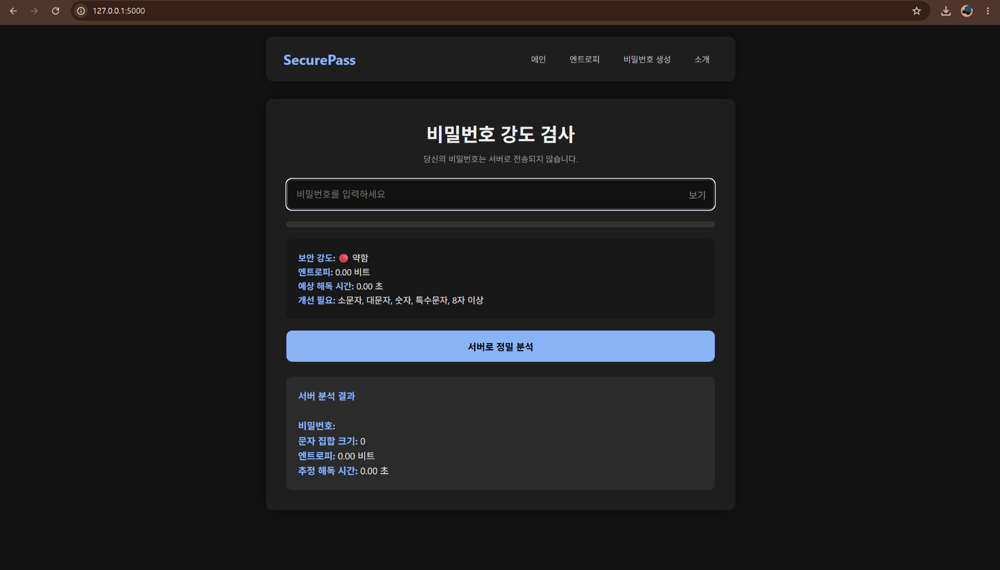

/ Security Project
비밀번호 강도 분석기
엔트로피 계산과 크래킹 시뮬레이션을 통해 비밀번호의 보안 강도를 정량화하는 프로젝트입니다.
Project Stack
01 · Overview
프로젝트 개요
비밀번호 강도 분석기는 사용자가 입력한 비밀번호를 기준으로 문자 집합, 길이, 반복 패턴, 사전 단어 사용 여부 등을 분석하여 보안 강도를 평가하는 도구입니다. 결과는 점수와 설명을 함께 제공해 사용자가 왜 위험한지 이해할 수 있게 구성했습니다.
비밀번호 보안은 단순히 길이만으로 판단하기 어렵습니다. 같은 12자리라도 반복 문자나 흔한 단어가 포함되면 실제 강도는 낮아질 수 있습니다. 이 프로젝트는 수학적 엔트로피와 현실적인 크래킹 관점을 함께 반영하는 것을 목표로 했습니다.
02 · Features
주요 기능
- 비밀번호 길이와 사용 문자 집합 분석
- 엔트로피 기반 이론적 경우의 수 계산
- 반복 문자, 연속 문자, 흔한 패턴 감점
- 예상 크래킹 시간 시뮬레이션
- 사용자에게 개선 방향을 제시하는 피드백 출력
03 · Architecture
구현 구조
Frontend Form
사용자가 비밀번호를 입력하고 분석 요청을 보냅니다.
Flask Backend
입력값을 받아 분석 알고리즘에 전달합니다.
Entropy Calculator
문자 집합과 길이를 기준으로 이론적 강도를 계산합니다.
Pattern Analyzer
반복, 순차, 사전 기반 약점을 탐지해 최종 점수에 반영합니다.
04 · Build Log
어떤 방식으로 만들었는가
핵심 로직은 엔트로피 계산 함수와 패턴 감점 함수로 분리했습니다. Flask는 웹 인터페이스를 제공하기 위해 사용했고, 분석 결과는 점수만 보여주지 않고 위험 원인과 개선 팁까지 함께 출력하도록 설계했습니다.
엔트로피 공식만 적용하면 실제로는 취약한 비밀번호가 높게 평가될 수 있습니다. 예를 들어 긴 반복 문자열은 경우의 수가 커 보여도 크래킹에서는 쉽게 추측됩니다. 이를 보완하기 위해 반복/순차/키보드 패턴을 별도 검사 항목으로 두었습니다.
Screenshot Area

05 · Result
결과 및 배운 점
비밀번호 강도를 수치화하는 과정에서 이론적 보안 강도와 실제 공격 가능성의 차이를 이해할 수 있었습니다. 또한 보안 도구는 결과만 보여주는 것이 아니라 사용자가 안전한 선택을 하도록 설명하는 UX가 중요하다는 점을 반영했습니다.
06 · Next Step
개선 계획
- 한국어/영어 사전 단어 기반 약점 검사 강화
- Have I Been Pwned 같은 유출 여부 확인 연동 검토
- 다크모드 UI 개선
- 분석 결과 저장 없이 동작하는 프라이버시 안내 추가